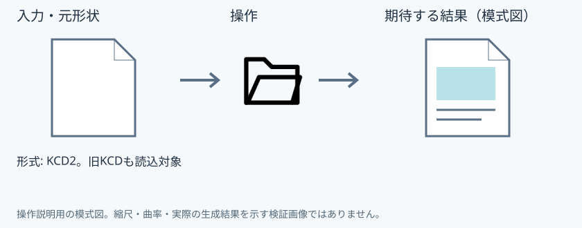
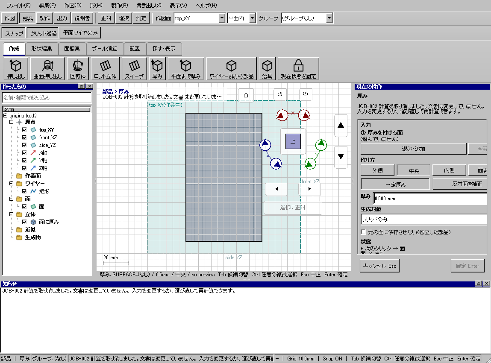

開く
具体例: 保存した側板を開く

準備
練習用のside.kcd2を保存しておく
操作手順
- ファイルの「開く」を押す
- side.kcd2を選ぶ
設定: 形式: KCD2。旧KCDも読込対象
結果を確認
内容が左一覧と3Dビューへ表示される。読込失敗時は元の文書を保つ。
取消・やり直し
ダイアログの取消、またはペインの取消を使います。即時操作には未確定段階がありません。 確定済みの文書変更はCtrl+Z、やり直しはCtrl+Yです。保存・書出し済みのファイルはUndoの対象ではありません。
進めない場合
保存した文書を開きます。読めない中身なら、いまの文書はそのままにします。
対象欄と3Dの強調を照合し、必要な線・面・部品を各役割へ指定します。処理中は計算表示を確認し、取消が可能な処理は取消を使います。
Windows版の操作画面
